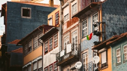
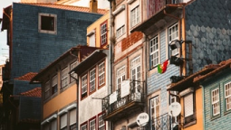

О нас

В этом месте контент-менеджер должен был рассказать какие мы клёвые, но так получилось, что у нас нет контент-менеджера. Для того, чтобы место не пропадало, я лучше расскажу, какой странный сон мне приснился недавно, это и вас развлечёт и мне даст возможность потренироваться в вёрстке.
Я — парень лет 14, учусь в школе с углубленным изучением математики, для души изучаю голландский язык по скайпу с голландской девушкой на год меня старше, у нас с ней Отношения. И вот я сижу на контрольной работе по комплексным числам, на часах 12:48 и я мысленно делю и у меня получается 0.25 тут я внезапно чихаю, на мгновение закрыв глаза, а когда я их открываю, то вижу, что я стою в «Пятёрочке» и раскладываю лук в большой такой короб, мне теперь 42 года, я Инга Владимировна Сиверцева, пять лет в разводе, живу с мамой на Нижнем Тракторном.
Ну, понятное дело, кому о таком расскажешь? Но я понимаю, что какая–то неведомая сила перекинула меня в чужое тело и надо вернуть своё (в духе Лукьяненко). И я, закончив смену, быстренько курю около служебного входа, отмахиваюсь от предложения девчонок выпить наконец пива, еду в Макдональдс на другом конце города, куда я 14–летний собирался ехать после контрольной.
И там я вижу себя, спокойно жующего «биг–тейсти», и я сажусь напротив с ватными ногами и рассказываю всю эту историю и говорю: «Не знаю, как ты это проделала, Инга Владимировна, но проделывай это всё обратно, я даже это имя, Инга, ненавижу!" А парень смотрит на меня и отвечает: «Прикольный рассказ, прям как у этого, который «Ночной дозор» написал. То есть ты — это я?»
И он пишет на салфетке какое–то бредовое уравнение:
sub܁4log6(10 +!Х) ≡ sin܁log63
и предлагает решить мне его, а я понимаю, что знаю — это субтригонологарифмическое уравнение, решать его надо отбросив логарифм, но я совершенно не могу этого сделать. И он мне говорит что–то типа: «Ансур диц ойхе?», я понимаю, что это голландский, но ответить тоже не могу, потому что все знания внутри меня заперты в стеклянный куб, могу только посмотреть, но не дотянуться.
И он говорит: «Поэтому я фантастику и не читаю, тётенька». Допивает колу, встаёт с подносом и уходит.
А я еду домой, по дороге заруливая в бар, где сидят подруги из «Пятёрочки». Там играет «О боже, какой мужчина!», я пью пиво, и Лена говорит мне, что слышала стопудово — меня назначат директором по свежести, вместо этой дуры Анечки.
Мы выходим из бара заполночь, вызываем «Яндекс.Такси» и едем по домам. Мама спит в своей комнате и тихо похрапывает. Я открываю холодильник, выпиваю рассола из банки. Смотрю в ночной двор на облупившийся бюст Карла Маркса, покрытый в сто слоёв серебрянки, так что черты лица смазались, будто его много лет лизали собаки.
На подоконнике стоит баночка с проросшим луком. Я беру её и вижу маркировку на этикетке: «0.25l» На мгновение это число кажется мне страшно важным, но потом я забываю почему и просыпаюсь.
Навыки
Профиль:
Вэб-разработчик
Уровень мастерства:
инструменты
HTML, CSS, JS, Bootstrap, React
Уровень хвастовства:
инструменты
центр выработки дофамина
Уровень обучения:
инструменты
тетради, вебинары, нытьё в личке наставника
Профиль:
Вэб-разработчик
Уровень мастерства:
инструменты
HTML, CSS, JS, Bootstrap, React
Уровень хвастовства:
инструменты
центр выработки дофамина
Уровень обучения:
инструменты
кофе, музыка, натуженный креатив
Портфолио
Проектирование и строительство мостов
Если честно - мост Понти-ди-Дон-Луиш I построили в Португалии не мы. Что же до проектирования этого моста, то да, вы угадали - мы его и не проектировали тоже.
Додумайся кто-нибудь пустить нас к проектированию мостов, мы бы отказались. Другое дело - проектирование сайтов, разметка css, какой-нибудь Java Script - тут бы мы развернулись, да. Вышло бы лучше, чем с мостами.


 
